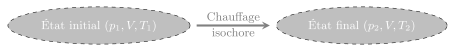
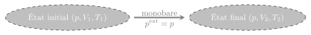
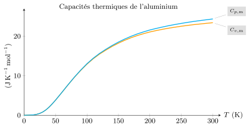
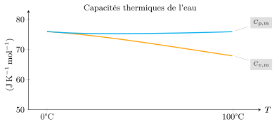
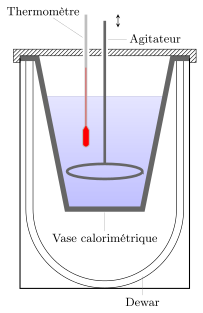
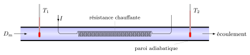
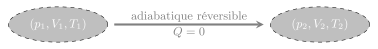
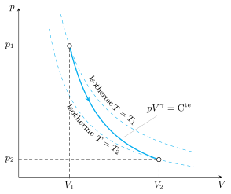
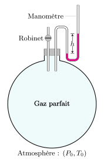

Considérons un système fermé, homogène et de composition invariable.
Pensez par exemple à un bloc de fer, un volume d’eau ou à un volume d’air. On suppose que
seules les forces de pression travaillent de sorte que ces systèmes sont décrit par les
variables \(p\), \(V\) et \(T\).

Transformation isochore.
Chauffons un tel système en maintenant son volume constant. Lors de ce processus isochore,
le système reçoit un transfert thermique :
$$
\quad Q_\text{v} = \Delta U
$$
car
$$
\quad W = - \int p^\text{ext} \mathrm{d}V = 0
$$
Imaginons maintenant un chemin réversible fictif qui part de l’état initial \((p_1,V,T_1)\)
pour arriver vers l’état final \((p_2,V,T_2)\). Au cours de cette transformation, la
variation d’énergie interne entre deux états d’équilibre voisins s’écrit :
$$
\quad \mathrm{d}U = U(T+\mathrm{d}T,V,n) - U(T,V,n)
= \left. \frac{\partial U}{\partial T}\right|_{V,n}\mathrm{d}T
$$
Définition :
La capacité thermique isochore est une propriété extensive définie par :
$$
\quad \boxed{ C_\text{v} \overset{\text{def}}{=}
\left. \frac{\partial U}{\partial T}\right|_{V,n} }
$$
Cette grandeur dépend a priori de \(V\) et \(T\).
On en déduit :
$$
\quad \boxed{ Q_\text{v} = \Delta U = \int_{T_1}^{T_2} C_\text{v} \mathrm{d}T }
$$
La capacité thermique isochore est une propriété extensive. Il est alors naturel de définir
les grandeurs molaires et massiques correspondants :
$$
\quad \underbrace{C_\text{v}}_{\rm{J.K^{-1}}} =
\underbrace{n \times C_\text{v,m}}_{\rm{mol} \times \rm{J.K^{-1}.mol^{-1}}}
= \underbrace{ m \times c_\text{v} }_{\rm{kg} \times \rm{J.K^{-1}.kg^{-1}}}
$$
Finalement, on a plusieurs façons d’exprimer le transfert thermique :
$$
\quad Q_\text{v} = \Delta U = \int_{T_1}^{T_2} C_\text{v} \, \mathrm{d}T
= \int_{T_1}^{T_2} n \times C_\text{v,m} \, \mathrm{d}T
= \int_{T_1}^{T_2} m \times c_\text{v} \, \mathrm{d}T
$$
Si la capacité thermique est constante dans l’intervalle \([T_1,T_2]\) on a :
$$
\quad \boxed{ Q_\text{v} = m c_\text{v}(T_2-T_1) }
$$
\(c_\text{v}\) représente alors la quantité d’énergie thermique qu’il faut fournir à une
masse de 1 kg pour provoquer une augmentation de température de 1 K
(ou 1 °C), ceci de manière isochore.
Capacité thermique isobare
Reprenons le même système et chauffons-le manière monobare en fixant la pression extérieur à
la valeur \(p\).

Transformation monobare.
Cherchons à déterminer le transfert thermique à fournir pour faire passer sa température de
\(T_1\) à \(T_2\). Pour cela, définissons une nouvelle grandeur : l’enthalpie.
Enthalpie \(H\)
L’enthalpie est une grandeur, homogène à une énergie, et construite à partir de l’énergie
interne, la pression et le volume du système à l’équilibre :
$$
\quad \boxed{ H = U + pV }
$$
Par construction, l’enthalpie est une fonction d’état extensive qui s’exprime en joules.
Notez que, contrairement à l’énergie interne, la fonction enthalpie n’a de sens qu’à
l’équilibre thermodynamique, car la pression \(p\) doit être définie pour le système entier.
Calculons la variation d’enthalpie du système pour cette transformation monobare :
$$
\quad \Delta H = \Delta U + p \Delta V
$$
or, le premier principe donne :
$$
\quad \Delta U + \Delta \mathcal{E}_c = Q_p - \int p \mathrm{d}V + W_\text{autres}
$$
Si l’on suppose que seules les forces de pression travaillent, et que le système est au
repos au début et à la fin, on arrive au résultat suivant :
$$
\quad \Delta U = Q_p - p \Delta V
$$
d’où
$$
\quad \boxed{ Q_p = \Delta H }
$$
\(H\) étant une fonction d’état, sa variation ne dépend pas de la transformation, et l’on
peut donc répéter le même raisonnement fait pour l’étude de la transformation isochore. Si
l’on choisit \(T\) et \(p\) comme variables intensives et \(n\) comme variable extensive, on
peut écrire \(H = H(T,p,n)\). Le long d’un chemin isobare réversible fictif, on a :
$$
\quad \mathrm{d}H = H(T+\mathrm{d}T,p,n) - H(T,p,n)
= \left. \frac{\partial H}{\partial T}\right|_{p,n}\mathrm{d}T
$$
Définition :
La capacité thermique isobare est une propriété extensive définie par :
$$
\quad \boxed{ C_\text{p} \overset{\text{def}}{=}
\left. \frac{\partial H}{\partial T}\right|_{p,n} }
$$
Cette grandeur dépend a priori de \(T\), \(p\) et \(n\).
À l’instar de la capacité thermique isochore, on introduit les capacités thermiques isobares
massique et molaire :
$$
\quad \underbrace{C_\text{p}}_{\rm{J.K^{-1}}} =
\underbrace{n \times C_\text{p,m}}_{\rm{mol} \times \rm{J.K^{-1}.mol^{-1}}}
= \underbrace{ m \times c_\text{p} }_{\rm{kg} \times \rm{J.K^{-1}.kg^{-1}}}
$$
Finalement, le transfert thermique s’écrit :
$$
\quad Q_\text{p} = \Delta H = \int_{T_1}^{T_2} C_\text{p}(T,p) \, \mathrm{d}T
= \int_{T_1}^{T_2} m c_\text{p}(T,p) \, \mathrm{d}T
= \int_{T_1}^{T_2} n \times C_\text{p,m}(T,p) \, \mathrm{d}T
$$
Si la capacité thermique est constante dans l’intervalle \([T_1,T_2]\) on a :
$$
\quad \boxed{ Q_\text{p} = m c_\text{p}(T_2-T_1) }
$$
\(c_\text{p}\) représente alors la quantité d’énergie thermique à fournir à une masse de
1 kg afin que sa température augmente de 1 K (ou 1 °C), sous une
pression extérieure constante.
Capacités thermiques des corps denses
Cas des solides
Généralement, les substances solides se déforment peu sous l’influence de la pression de
sorte que les capacités thermiques varient essentiellement avec la température et très peu
avec la pression (ou le volume molaire). Les capacités thermiques s’annulent au zéro absolu
et augmentent continûment avec la température.
Par ailleurs, on montre la relation suivante (relation de Mayer) :
$$
\quad c_\text{p} - c_\text{v} = \frac{\alpha^2 T v}{\chi_T} \gt 0
$$
Avec le coefficient de dilatation thermique \(\alpha = \frac{1}{V} \left.
\frac{\partial V}{\partial T}\right|_p\) et le coefficient de compressibilité
isotherme \(\chi_T = -\frac{1}{V} \left. \frac{\partial V}{\partial p}\right|_T\).
Ces deux coefficients étant positifs, on a donc toujours :
$$
\quad c_\text{p} \gt c_\text{v} \quad \forall \, T \neq 0\,\rm{K}
$$

Evolution des capacités thermiques de l’aluminium.
On constate que l’écart \(c_\text{p} - c_\text{v}\) augmente avec la température, mais pour
la plupart des solides l’écart relatif \((c_\text{p} - c_\text{v})/c_\text{v}\) dépasse
rarement 5 % à température modéré. C’est la raison pour laquelle on adoptera souvent
l’approximation des solides indéformables.
Approximation des solides indéformables :
les capacités thermiques massiques ou molaires ne dépendent que de la température
\(c_\text{p}(T) = c_\text{v}(T)\)
À température ambiante, la capacité thermique des solides monoatomiques vérifient
assez bien (à quelques exceptions près) la règle de Dulong et Petit :
$$
\quad C_\text{p,m} \simeq C_\text{v,m} \simeq 3R \simeq 25\,\rm{J.K^{-1}.mol^{-1}}
$$
Cas des liquides
À l’instar des solide, la capacité thermique des liquides dépend surtout de la température,
et très peu du volume ou de la pression. En revanche, contrairement aux solides, la
différence \(c_\text{p} - c_\text{v}\) est rarement négligeable.
Il n’y a pas de modèle simple pour prévoir la capacité thermique des liquides. Cependant,
on constate que pour de nombreux liquides \(c_\text{p} \approx 2\,\rm{J.K^{-1}.g^{-1}}\) à
température ambiante.

Capacités thermiques de l’eau liquide sous 1 bar en fonction de la
température.
Pour l’eau, le \(c_\text{p} \) est anormalement élevé : \(c_\text{p}(\text{eau}) =
4{,}2\,\rm{J.K^{-1}.g^{-1}}\) ce qui correspond à une capacité thermique molaire de l’ordre
de \(75\,\rm{J.K^{-1}.mol^{-1}}\), soit trois fois plus que celle des solides. Ainsi, en
plus d’être bon marché, l’eau est un très bon fluide caloporteur.
Méthodes de mesure
Mesure par calorimétrie
Un calorimètre est une enceinte adiabatique dans laquelle les corps qui s’y trouvent
évoluent de façon monobare, car soumis à la pression atmosphérique considérée constante
durant l’expérience. Le système \(\mathcal{S}\) constitué par le calorimètre et son contenu
obéit donc à la relation :
$$
\quad \boxed{ Q_p = \Delta H_\mathcal{S} = 0 }
$$
Le calorimètre à vase Dewar est d’un usage courant en salle de Travaux Pratiques. Il est
constitué d’un vase en double paroi, les deux parois étant séparées par du vide pour limiter
les transferts thermiques. En première approximation, les inévitables pertes thermiques
notamment au niveau du couvercle du calorimètre seront négligées
par la suite.

Calorimètre à vase Dewar.
Pour mesurer la capacité thermique d’un solide on peut suivre la procédure suivante. Dans un
vase calorimétrique de capacité \(C\), on introduit une masse d’eau \(m_e\). On attend
l’équilibre thermique puis on note la température \(T_1\). On plonge une masse \(m_s\) d’un
solide de capacité \(c_s\) inconnue, et de température \(T_2\). Après quelques dizaines de
secondes, la température se stabilise à une température finale \(T_f\). En supposant les
variations de température suffisamment faibles pour considérer les capacités thermiques
constantes dans l’intervalle de température, l’équation précédente donne :
$$
\quad \Delta H_\mathcal{S} = 0 =
\underbrace{\Delta H_\text{eau}}_{m_ec_e(T_f-T_1)}
+ \underbrace{\Delta H_\text{calorimètre}}_{C(T_f-T_1)}
+ \underbrace{\Delta H_\text{solide}}_{m_sc_s(T_f-T_2)}
$$
ce qui donne
$$
\quad c_s = \frac{(T_f-T_1)(m_ec_e+C)}{(T_2-T_f)m_s}
$$
En général, la capacité thermique \(C\) du calorimètre est connue de sorte qu’il suffit de
mesurer les températures et les masses pour déterminer la capacité thermique isobare du
solide sachant que \(c_e = 4{,}18\,\rm{J.K^{-1}.g^{-1}}\) à température ambiante.
Mesure par écoulement stationnaire
Dans le cas des liquides, on évite la méthode du mélange dans un calorimètre et préfère une
méthode électrique. Dans un tube calorifugé, on fait circuler un liquide à pression
constante, en régime stationnaire de débit massique \(D_m (\rm{kg.s^{-1}})\). On plonge une
résistance chauffante \(R\) que l’on alimente par une source de courant d’intensité \(I\).
La mesure consiste à déterminer l’écart de température \(T_2 - T_1\) en régime stationnaire.

Mesure de la capacité thermique d’un liquide par écoulement stationnaire
calorifugé.
Faisons un bilan sur la portion de fluide dans laquelle plonge la résistance. Entre les
instants \(t\) et \(t+ \mathrm{d}t\). Pendant la durée \(\mathrm{d}t\), le fluide se déplace
et tout se passe comme s’il gagnait une masse \(\mathrm{d}m = D_m \mathrm{d}t\) à la
température \(T_2\) et qu’il perdait la même masse à la température \(T_1\). Ainsi le
système voit son enthalpie varier de \(\mathrm{d}H = D_m \mathrm{d}t c_\text{p} (T_2-T_1)\).
Le premier principe nous dit que :
$$
\quad \mathrm{d}H = \delta W_\text{elec} + \delta Q_p
$$
\(\delta Q_p = 0\) car les parois sont adiabatiques, et \(\delta W_\text{elec}=
RI^2\mathrm{d}t\) correspond au travail des forces électriques fourni via la résistance
chauffante. On arrive au résultat :
$$
\quad c_\text{p} = \frac{RI^2}{D_m(T_2 - T_1)}
$$
Cas des gaz parfaits
Relation de Mayer
Rappelons les propriétés des gaz parfaits :
$$
\quad \begin{cases}
pV = nRT \quad &\text{équation d’état}\\
U_\text{GP} = U(n,T)\quad &\text{première loi de Joule}
\end{cases}
$$
Il en découle que la fonction enthalpie \(H = U(n,T) + pV = U(n,T) + nRT\) ne dépend que de
la température et de la quantité de matière, ce qui constitue la seconde loi de Joule.
Ainsi, pour un gaz parfait, on peut toujours écrire :
$$
\quad \Delta U = \int nC_\text{v,m}(T)\mathrm{d}T
$$
et
$$
\quad \Delta H = \int nC_\text{p,m}(T)\mathrm{d}T
$$
Dérivons la relation \(H-U=nRT\) par rapport à \(T\), en fixant la pression et la quantité
de matière :
$$
\quad \left. \frac{\partial H}{\partial T} \right|_{\text{n,p}}
- \left. \frac{\partial U}{\partial T} \right|_{\text{n,p}} = nR
$$
Le premier terme correspond à la capacité thermique isobare. Quant au second, on reconnaît
la capacité thermique isochore vu que l’énergie interne ne dépend que de la température. On
obtient la relation de Mayer relative aux gaz parfaits :
$$
\quad \boxed{ C_\text{p} - C_\text{v} = nR }
$$
Évidemment, si on raisonne sur 1 mole, toutes ces quantités ne dépendront que de la
température.
Du fait de la relation de Mayer, les propriétés calorimétriques sont entièrement déterminées
par le rapport des capacités thermiques, que l’on note \(\gamma\) :
$$
\quad \boxed{ \gamma \overset{\text{def}}{=} \frac{C_\text{p}}{C_\text{v}}
= \frac{c_\text{p}}{c_\text{v}}
= \frac{C_{\text{p,m}}}{C_{\text{v,m}}} }
$$
On appellera ce rapport facteur calorimétrique (ou exposant adiabatique ou encore
coefficient de Laplace). En remplaçant \(C_{\text{p,m}}\) par \(\gamma C_{\text{v,m}}\),
dans la relation de Mayer, on obtient :
$$
\quad \boxed{ C_{\text{v,m}} = \frac{R}{\gamma-1} }
$$
et$$
\quad \boxed{ C_{\text{p,m}} = \frac{\gamma R}{\gamma-1} }
$$
La thermodynamique classique échoue à prévoir les valeurs de \(\gamma\). En revanche la
physique statistique permet de telles prévisions. À température ambiante, le coefficient
\(\gamma\) dépend essentiellement du nombre \(p\) de degrés de liberté d’une molécule. Par
exemple, un atome présente trois degrés de libertés de translations \((x,y,z)\) alors qu’une
molécule \(\rm{CO_2}\) en présente 5 (3 degrés de translations et deux de rotation). On
pourra retenir la règle :
$$
\quad \boxed{ C_{\text{v,m}} \simeq p\frac{R}{2} }
$$
Lois de Laplace
Le facteur \(\gamma\) est souvent appelé exposant adiabatique, car il intervient dans la loi
d’évolution d’un gaz parfait subissant une transformation adiabatique et réversible.

Transformation adiabatique réversible d’un gaz parfait.
Envisageons une telle transformation en supposant que seules les forces de pression
travaillent. Le premier principe entre deux états successifs d’équilibre se traduit alors
par :
$$
\quad U(n,T+\mathrm{d}T) - U(n,T) = n C_{\text{v,m}} \mathrm{d}T
= \delta Q^\text{rev} + \delta W^\text{rev} = \delta W^\text{rev} = -p\mathrm{d}V
$$
On peut réécrire le terme de gauche en fonction uniquement de \(p\) et de \(V\) :
$$
\quad n C_{\text{v,m}} \mathrm{d}T = \frac{nR}{\gamma-1} \mathrm{d}T
= \frac{\mathrm{d}(nRT)}{\gamma-1} = \frac{\mathrm{d}(pV)}{\gamma-1}
= \frac{p\mathrm{d}V + V\mathrm{d}p }{\gamma-1}
$$
En réinjectant dans le premier principe on aboutit à la relation :
$$
\quad \gamma p \mathrm{d}V + V\mathrm{d}p = 0 \Rightarrow
\gamma \frac{\mathrm{d}V}{V} = - \frac{\mathrm{d}p}{p}
$$
Après intégration, on trouve que \(\gamma\ln(V) + \ln(p) = \rm{C^{te}}\). Autrement dit, la
quantité \(pV^\gamma\) reste constante au cours de la transformation.
Par ailleurs, la quantité de matière étant fixée, le produit \(pV/T\) reste également
constant. On en déduit que les produits \(TV^{\gamma-1}\) et \(T^\gamma p^{1-\gamma}\) sont
invariants pendant la transformation.
Lois de Laplace :
Un gaz parfait, de facteur calorimétrique \(\gamma\) constant, subissant une transformation
adiabatique réversible obéit aux lois suivantes :
$$
\quad \boxed{ \begin{aligned}
& pV^\gamma = \rm{C^{te}} \\
& TV^{\gamma-1} = \rm{C^{te}} \\
& T^\gamma p^{1-\gamma} = \rm{C^{te}}
\end{aligned} }
$$
Évidemment, la constante n’a pas la même valeur et dépend des conditions initiales.
En conséquence, toute détente adiabatique réversible s’accompagne d’un refroidissement du
gaz, et toute compression d’un échauffement.

Évolution de l’état du gaz parfait dans le diagramme de Clapeyron, lors d’une
détente adiabatique réversible.
Conditions de validité des lois de Laplace
On peut considérer une transformation adiabatique si l’opération est suffisamment rapide
pour que le transfert thermique soit négligeable. Cette condition est en conflit avec la
condition de réversibilité qui exige une transformation plutôt lente. En réalité il suffit
que la vitesse des surfaces mobiles soit faible devant la vitesse moyenne des molécules afin
que la densité reste uniforme dans tout le volume à chaque instant.
Méthodes de mesure
Plusieurs méthodes permettent de mesurer la capacité thermique d’un gaz.
Méthode des écoulements permanents
La méthode utilisée pour les liquides fonctionne également avec les gaz.
Expérience de Clément et Desormes
Le principe consiste à faire entrer dans un ballon en verre de l’air sous pression. Après
avoir attendu l’équilibre thermique, on note la surpression initiale \(\delta p_1\). On
ouvre ensuite un robinet pour que l’air sous pression s’échappe du ballon, puis on referme
le robinet. L’air qui reste a subi une détente adiabatique quasi réversible. L’air dans le
ballon s’est donc refroidie. En s’équilibrant avec l’extérieur, le gaz voit sa température
et donc sa pression augmenter. On note \(\delta p_2\) la surpression finale. On montre alors
que :
$$
\quad \gamma_\text{gaz} = \frac{\delta p_1}{\delta p_1 - \delta p_2}
$$

Dispositif de Clément et Desormes.
Mesure acoustique
La vitesse du son dans un gaz parfait dépend de la température et de la nature du gaz via la
masse molaire et le coefficient calorimétrique :
$$
\quad c_\text{son} = \sqrt{\frac{\gamma RT}{M}}
$$
On peut par exemple déterminer la vitesse du son en déterminant les fréquences de résonance
dans une cavité acoustique.